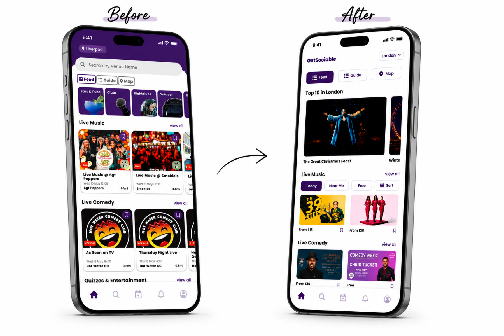
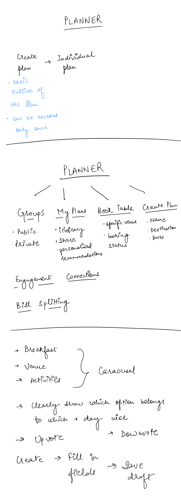
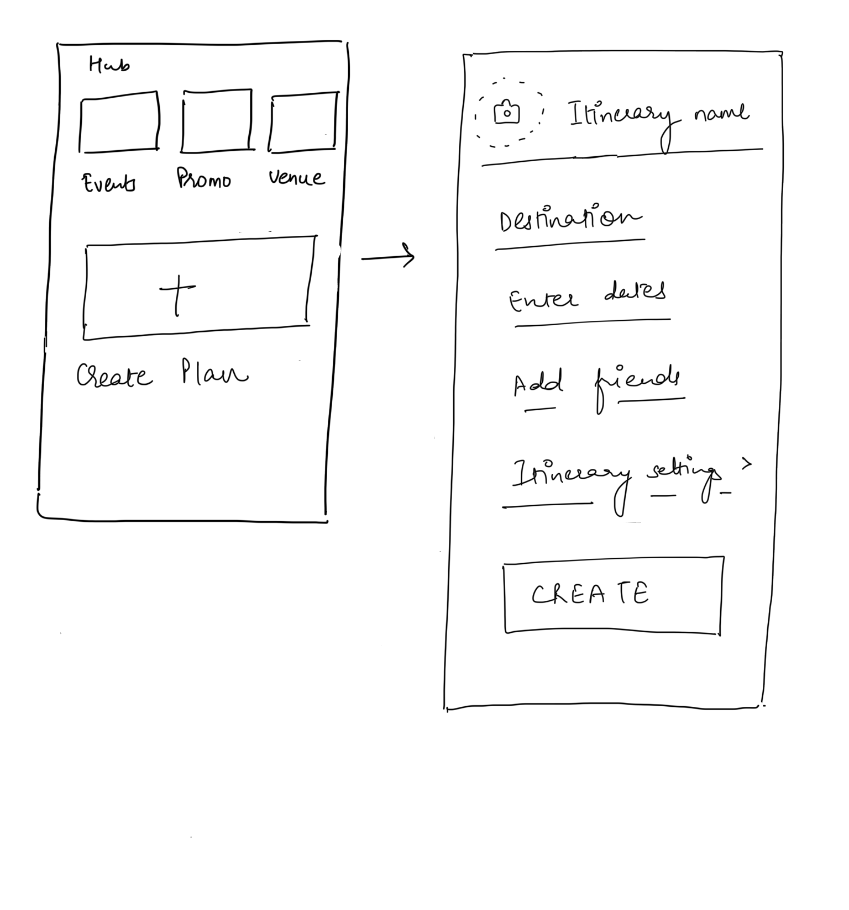

Unclear information hierarchy
All content was weighted equally, making it impossible to distinguish primary actions (book a trip) from secondary features (view recommendations, social content).
GetSociable is an early-stage events and social discovery app targeting young professionals in urban markets. In 2024, the founding team needed to demonstrate user engagement and retention to support their next funding conversation — which meant fixing the product experience before scaling acquisition.
GetSociable's new users left the homepage feeling overwhelmed. Research revealed two problems: the navigation was unclear, and the app was cluttered and missed advance booking options.

All content was weighted equally, making it impossible to distinguish primary actions (book a trip) from secondary features (view recommendations, social content).
Users wanted to discover events, coordinate with friends, and secure plans ahead of time — but the app had no feature for it. Every group outing was managed outside the app through WhatsApp threads.
Redundant sections and small text sizes created cognitive overload, making the experience feel cluttered rather than curated.
Face-to-face sessions with active users, churned users, and group organisers.
In-app survey. Navigation clarity was the top complaint across all segments.
Session recordings showed users spending 2–3 min on the homepage then exiting. Nothing was getting clicked.
"We arrived and they said they couldn't fit us in — we had to wait half an hour. If we had booked in advance… but we didn't really know how busy it would be."
Charlotte, user interview — on not planning group outings in advance
Users weren't asking for a trip planner — they were describing the exact problem one would solve. When I asked "how do you plan group outings?", every user mentioned WhatsApp threads, no-shows, and last-minute confusion. We assumed we'd redesign navigation; interviews revealed we needed to build a feature. That reframe shaped the entire project scope.
Navigation was the top complaint, across every segment, by a significant margin. Out of 150+ responses, clarity of what to do next was the single most-cited pain point. The survey gave us the statistical weight to push back on stakeholder assumptions and keep navigation clarity as the primary focus — not a secondary nice-to-have.
Users spent 2–3 minutes on the homepage then left without a single tap on a core feature. The heatmap showed almost all attention in the top-left corner — the logo. Nothing else was getting clicked. A supplementary heuristic review confirmed 12 distinct usability issues, but only 3 caused 80% of the drop-off: navigation clarity, content hierarchy, and visual design — all of which mapped exactly to what Hotjar showed. We made reducing time-to-first-meaningful-action the single success metric for the homepage redesign. Result: average time-to-first-meaningful-action dropped from 2m 40s to under 30s after the homepage redesign launched.
Before moving to high-fidelity, I sketched the key flows to validate the structure and interactions early.

Trip Planner ideation — mapping the tab structure (Groups, My Plan, Book Table, Create Plan), voting mechanics, and activity carousel by day.
Hub wireframe — three save categories (Events, Promo, Venue) and a direct path into the Create Plan flow.Before committing to the Trip Planner structure, I explored two alternative approaches: a lightweight event-sharing flow (share a link, friends RSVP) and an in-app group chat. Both were discarded — the sharing flow didn't solve the coordination problem, and in-app chat would have put us in direct competition with WhatsApp rather than replacing it. The tab structure (Groups, My Plan, Book Table, Create Plan) emerged from testing three different information architectures with users before settling on the one that felt most intuitive.
A 3% retention lift at GetSociable's early stage represented a meaningful directional signal — the product had not moved this metric in the two quarters prior.
Quick filters, location switcher in the search bar, save events from any screen, sorting options, and a full filter panel. These removed the most common friction points immediately and gave users the control they'd been asking for.
Restructured information hierarchy so primary actions (book a trip) were visually dominant. Eliminated redundant sections and reduced cognitive load. Average time-to-first-meaningful-action dropped from 2m 40s to under 30s.
Built a net-new collaborative planning feature from scratch. No one asked for a trip planner — but every user described the exact problem one would solve. This gave GetSociable a clear answer to "why use this instead of WhatsApp?" and drove the 23% feature-adoption result.

Peter McCleery, Director at GetSociable, on working together:
"Ishmeet understood and elicited requirements before delivering a design and prototype that met all of the user stories. She displayed strong professionalism and quickly built rapport with the team."
Peter McCleery · Director, GetSociable